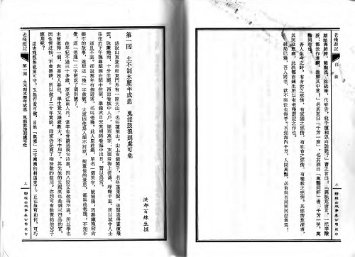

|
|
|
|
|
|
《徵求掃描檔》 2014/9/1 周劍輝 2015/3/7
(2015/3/7) 感謝掃描製書的讀友也能順便提供掃描檔，方便再核對。更要特別感謝chin223已提供逾千本掃描檔。
在此也再聲明一下：收集掃描檔的目的是方便製作和校正。因掃描檔是圖檔，動輒幾十至幾百個MB，無法提供讀友隨意下載。可以提供的情況只有一個：就是您有興趣製作或再校正該書；在這一種情況之下，歡迎來信索取。
更要強調一點：收集歸收集，並非有了掃描檔就能成書。讀者眾多，製書者少，站上大多數的書是由幾位讀友瀝血製作的。製作一本高品質的電子書耗時費事，由零至有至少要耗上兩、三個星期，一校二校再校。除非真是好書，沒有什麼意思的普通書或爛書，是不太可能有讀友願意花時間協助整理製作的。
(2014/9/1) 這幾年常有讀友提供原書掃描檔，對好讀大有助益：
1. 難得一睹的絕版好書，因而能由讀友協力製作成電子書，再有讀者。
2. 已有文字檔的好書，也因而能由讀友協力補缺修正，讀起來更順暢。
為了避免讀友重複提供原書掃描檔，會陸續整理書目：已有掃描檔的書，書名加淺藍背景色顯示。
司馬中原《狂風沙》美格騰製作 2006/8/18 (1405K) sue1289勘誤 2011/11/12
司馬中原【煙雲】分工製作 2012/5/19 (413K)
司馬中原【無弦琴】 (有掃描檔，Lin Lee提供)
司馬中原【啖頭記】 (有掃描檔，Roy Nien提供)
司馬中原【鄉思井】 (有原書)
像司馬中原的《狂風沙》，名列世紀百強第42，因無原書可核，有幾處不知如何修正。如您正好有原書，或可借到原書，請提供掃描檔。（機緣巧合居然借到原書。2014/10/20）
製作一本高品質的電子書非常費時費事。不論是手打或OCR輸入，都仍會有很多的錯，要多校正幾次才可能完美。手頭正好有書的製作者，請考慮也提供掃描檔，方便日後勘誤核對。
站上有好幾本書是我多年前，按原書逐字核對校正的，自以為夠細心。後來有讀友勘誤，我還頂不服氣的，心想怎麼可能還會有錯？未料真的有一些難猜解的失誤，要查原書才能改，但手頭已無書，不是送人就是還人了，非常後悔當時未掃描成檔備查。
和製作電子書相比，製作掃描檔只不過是舉手之勞。所需設備：普通的平板掃描器一台，如Canon LIDE110 Flatbed Scanner，目前價格是美金五十元左右。以灰階，300dpi掃描即可。
已有文字檔，僅供備查的掃描檔，可壓著書，一次掃兩頁，看得清楚就行，不必太講求工整。一本三百頁的書，兩個多小時就可掃完。

當然，若捨得拆書，一頁一頁平放著掃，會比壓著書掃來得輕鬆，效果也比較好。
若掃描檔過大，請放在雲端，如google drive (15 GB free), box (10 GB free), dropbox (2 GB free), 等，方便我下載。
看看您的書架上，也許就有好讀尚缺、您置之無用棄之可惜的絕版好書，與其日後一次倉促遺棄，不如找個空暇時，掃一下，提供給好讀保存，日後大家才有機會一睹。
現在絕版，日後就可能絕跡。像還珠樓主的《蜀山劍俠傳》，名列世紀百強第55，我的手頭是有文字檔，但很期望能按原書校正之後，再放上。可是原書似已絕跡，不知誰還有？（感謝chin223提供《蜀山劍俠傳》聯經全套26冊掃描檔。2014/10/20）
|
|
|
|
|
|
|
|
|
| 搜尋好讀 |
|
好讀第17年了。
有好讀真好，有你也真好。但不知遍及各地的你，究竟有多少。若你從未或很久沒贊助過好讀，請按這裡，贊助好讀美金或人民幣十元，讓我知道你存在。
11/25香港 Dennis C
幾年前由朋友介紹得悉好讀，多年來在旅途中它都帶給我很多樂趣。香港地方狹小，不少書都因地方問題而送人或丟棄，好讀卻帶給了我很多閲讀的方便、亦節省了儲存的位置。衷心多謝各位工作仝人！
11/19 美國紐約 June
發現好讀幾年了，但現在才發現這好讀留言板。抱歉呢，理應更早道謝。身在海外，要看一本中文書不是易事。書店售書種類少，價錢高；圖書館借書種類更少。幸好發現好讀網，可以一解書癮。衷心感謝所有有心人上載和校對。
11/17 大陸 Shirley
偶然發現好讀網這塊寶地真的很驚訝，網絡上有這樣安靜舒適的地方可以閱讀電子書，對我這種資金短缺的學生真的很意外很開心！
11/16 香港 chair chun wai
因為買了Kindle的緣故，所以才發現"好讀"這個地方。感謝"好讀"一直的更新和提供書本給大家。感謝感謝
11/15 香港 mike chan
我認識好讀是因爲kindle。那時中學買了kindle，需要找找電子書，因此在網上發現了好讀。對於繁體字kindle用家，這是個大福音！
11/13 大陸 BerthaR
今天因為Kindle的緣故找書，才發現好讀這個地方。感覺是一方淨土，公益地為書友們獲取知識省下了不少財力，節省了大家的時間：）目前我只是個高中生，提供的也只有十塊錢而已啦。十七年的好讀真是令人敬佩！希望你們知道我的感謝，還有知道更多人的感謝！
11/9 香港 MJ
從小喜愛看書，看書人也許都知道要管理保存書本是不容易的（尤其香港的地方空間更有限）。今年開始嘗試電子書，看看能否接受。因為好讀網的海量書本，小弟所喜愛的黃易＋衛斯理，還有準備開始看的金庸也不用愁了。感謝好讀！
>> 更多
|
|
|